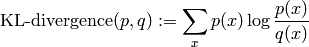

Statistical utilities for working with CME solver output.
Distributions are mappings that represent probability distributions over a discrete state space.
d.compress(epsilon) -> compressed epsilon-approximation of d
Returns compressed version of distribution.
The returned approximation is compressed, in the sense that it is the approximation with the smallest support, while the error between d and the approximation is within epsilon (L1 norm).
d.covariance() -> cov
Returns covariance of the distribution d, provided dimension == 2.
d.expectation() -> mu
Returns expected state of the distribution d, provided dimension > 0.
Replaces distribution using array p_dense in place
Returns self
The argument p_dense should be a numpy array of probabilities. The indices of the array are used to define the corresponding states. Multi-dimensional arrays are supported.
Optional argument origin defines the origin. This is added to the indices when defining the states.
Returns KL divergence to the distribution other from this distribution.
The Kullback-Leibler (KL) divergence of q from p is defined as

d.map(f [, g]) -> distribution
Returns a copy of the distribution d, with each key replaced by its image under f. Any duplicate image keys are merged, with the value of the merged key equal to the sum of the values.
If g is supplied, it is used instead of addition to reduce the values of duplicate image keys.
d.standard_deviation() -> sigma
Returns std deviation of the Distribution d, provided dimension == 1.
d.variance() -> sigma_squared
Returns variance of the Distribution d, provided dimension == 1.
compress(p, epsilon) -> compressed epsilon-approximation of p
Returns an approximation of the mapping p, treating p as a distribution p : states -> probabilities. The returned approximation is compressed, in the sense that it is the approximation with the smallest support, while the error between p and the approximation is within epsilon (L1 norm).
covariance(p) -> cov
Returns the covariance cov, treating the mapping p as a distribution p : states -> probabilities.
expectation(p) -> mu
Returns the expected value mu, treating the mapping p as a distribution p : states -> probabilities.
Returns KL-divergence of distribution q from distribution p.
The Kullback-Leibler (KL) divergence is defined as
Warning: this function uses numpy’s scalar floating point types to perform the evaluation. Therefore, the result may be non-finite. For example, if the state x has non-zero probability for distribution p, but zero probability for distribution q, then the result will be non-finite.
Returns the Lp distance between the distributions x & y. Default p = 1.
Equivalent to lp_norm(x - y, p)
map_distribution(f, p [, g]) -> mapping
Returns a copy of the mapping p, with each key replaced by its image under f. Any duplicate image keys are merged, with the value of the merged key equal to the sum of the values.
It is expected that f returns tuples or scalars, and behaves in a reasonable way when given vector state array arguments.
If g is supplied, it is used instead of addition to reduce the values of duplicate image keys. If given, g must have a reduce method of the form
g.reduce(probabilities) -> reduced_probability
for example, setting g to a numpy ufunc would be fine.
map_distribution_simple(f, p [, g]) -> mapping
reference implementation of map_distribution that is simple but slow
variance(p) -> sigma_squared
Returns the variance sigma_squared, treating the mapping p as a distribution p : states -> probabilities.